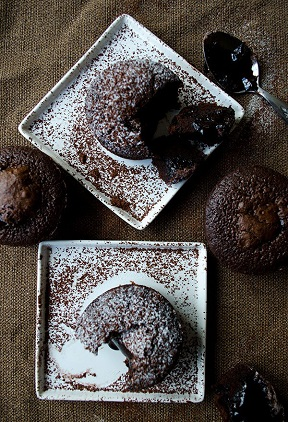

EASY LAVA CAKE
Back home
Dessert pictures


Ingredients
- 100g (3.5oz) dark chocolate, chopped
- 100g (3.5oz) butter
- 150g (5.5oz) light soft brown sugar
- 3 large eggs
- 1/2 tsp vanilla extract
- 50g (1.75oz) plain flour
Directions
- Preheat the oven to 200C (400F/Gas 6). Butter four basins or ramekins well and place on a baking tray
- Put the chocolate and butter in a heatproof bowl and set over a pan of hot water (or alternatively put in the microwave) and stir until smooth, then set aside to cool slightly for 15 minutes.
- Mix in the sugar, then the eggs, one at a time, followed by the vanilla extract and finally the flour. Divide the mixture among the basins or ramekins.
- You can now either put the mixture in the fridge and wait until they're nearly ready to be eaten, or bake now for 10-12 minutes, or until the tops are firm to touch but the middles still feel squidgy. Carefully run a knife around the edge of each pudding, then turn out onto serving plates and serve with single cream.